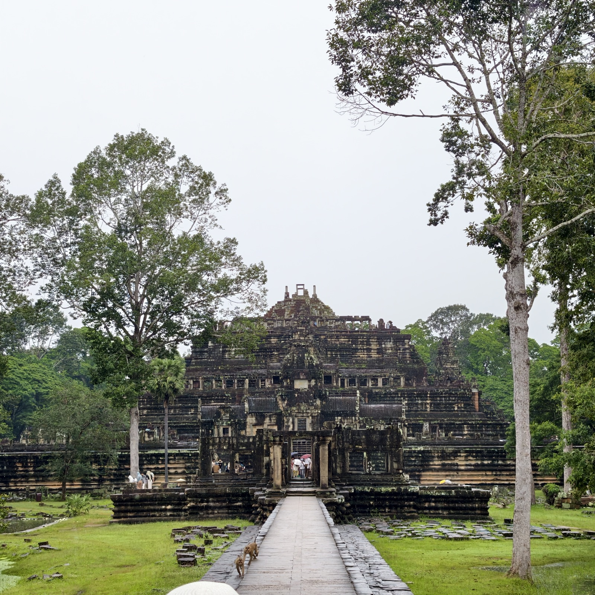
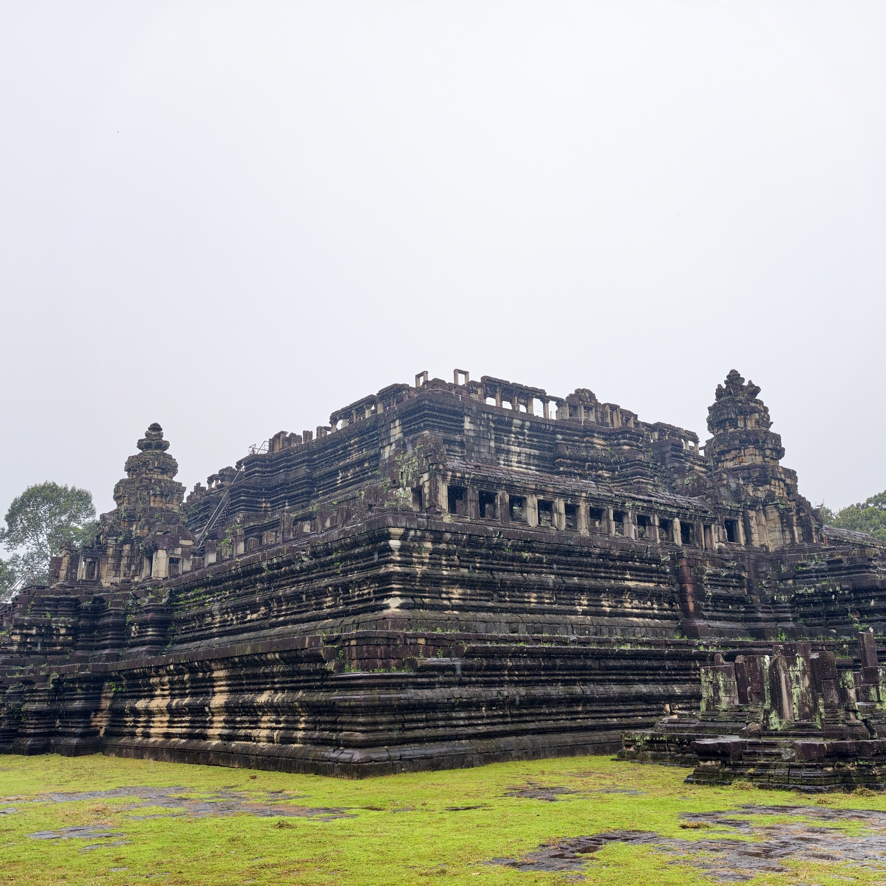
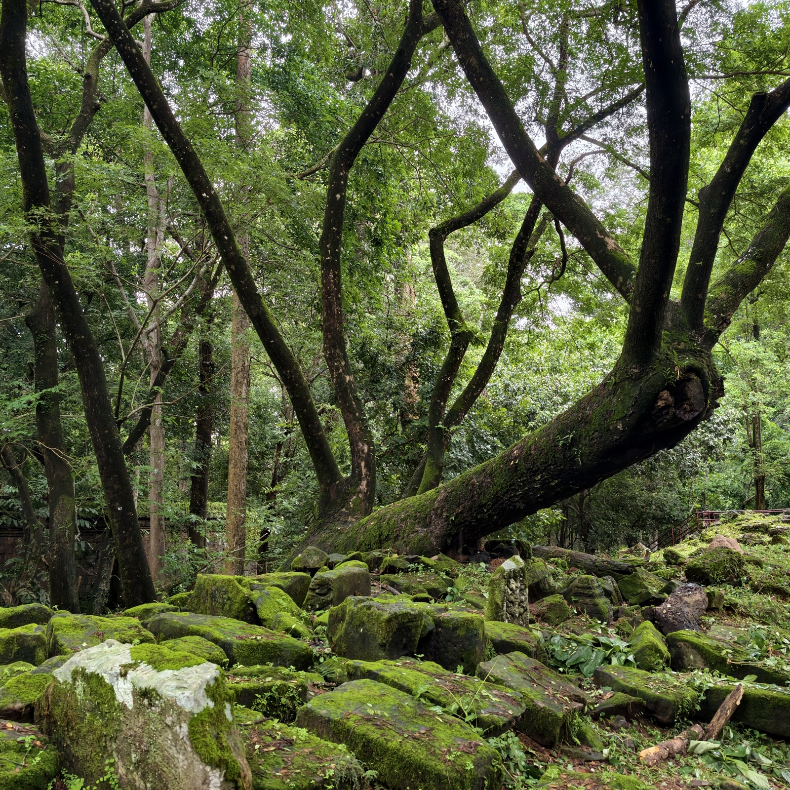

巴方寺
从巴戎寺往外走一段就是巴方寺。雨季，引道上湿漉漉的，有几只猴子也在散步。

方方的寺庙。

从巴方寺往空中宫殿走，陈老师带我们抄了一条小路。一路都是吴哥的绿意：古迹、断壁残垣和丛林长在一起，石头上覆满青苔。路上会看到很多散落的大石块——那些是还没修复完成的部分，就先放在原地，等着哪天被拼回去。

从巴戎寺往外走一段就是巴方寺。雨季，引道上湿漉漉的，有几只猴子也在散步。

方方的寺庙。

从巴方寺往空中宫殿走，陈老师带我们抄了一条小路。一路都是吴哥的绿意：古迹、断壁残垣和丛林长在一起，石头上覆满青苔。路上会看到很多散落的大石块——那些是还没修复完成的部分，就先放在原地，等着哪天被拼回去。
